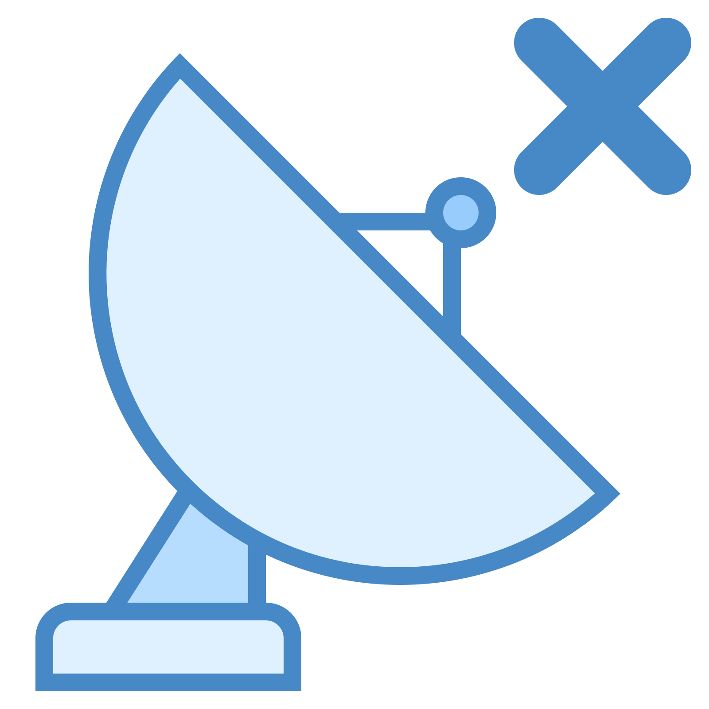

Peligro Ultrasonidos {{mensajeColision}}
Ultrasonidos OK {{mensajeColision}}
Monóxido normal No se excede el nivel carboxihemoglobina del 2.5 %
Monóxido precaución Después de 4-5 horas se puede observar un fuerte dolor de cabeza, incoordinación
muscular, debilidad, vómitos y colapso
Monóxido peligro Después de 3-5 horas se puede observar un fuerte dolor de cabeza, debilidad,
vómitos y colapso
Monóxido peligro!! XD Después de 2-15 minutos se puede producir la muerte
Sin señal

Señal obtenida